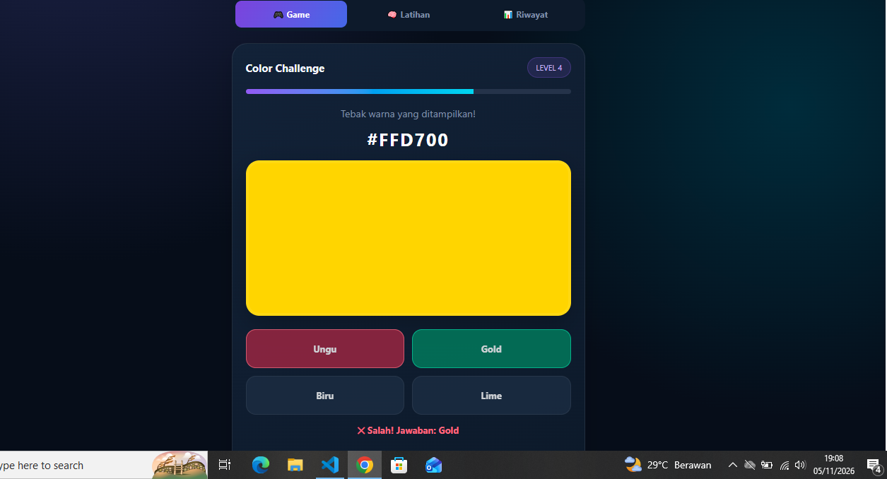
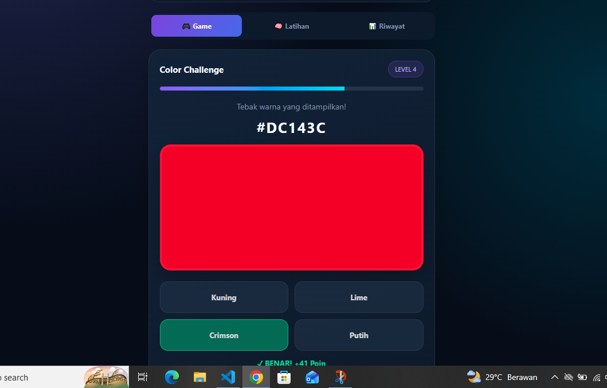

01
Hasil pengerjaan
Tampilan game dan proses pembuatannya.
Dokumentasi proses pembuatan game tebak warna—mulai dari menyusun prompt, menulis kode, hingga menguji hasilnya.
Cuplikan hasil dan tahapan pengerjaan game tebak warna.

Tampilan game dan proses pembuatannya.

Memeriksa respons jawaban benar dan salah.
Game diharapkan menerima tebakan warna yang benar dan menolak jawaban yang salah, lalu menampilkan pesan yang sesuai.